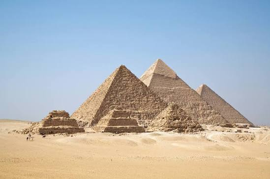
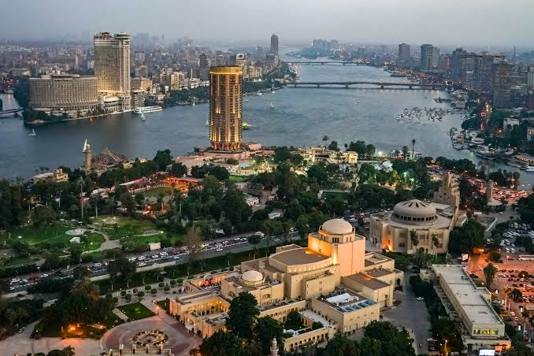

The Egyptian pyramids are ancient masonry structures built during the Old and Middle Kingdom periods as monumental tombs for the country's pharaohs and their consorts. Most notably clustered on the Giza Plateau on the outskirts of Cairo, these architectural marvels—including the Great Pyramid of Giza, built for Pharaoh Khufu—were constructed using millions of massive limestone and granite blocks transported from nearby quarries. Aligned with incredible astronomical precision to the cardinal points, the pyramids were designed not just as burial vaults to protect the king's mummified body and treasures, but as cosmic launchpads to help his soul ascend to the afterlife among the gods. Today, as the only surviving wonder of the ancient world, they remain an enduring symbol of Egypt's immense engineering ingenuity, religious devotion, and sophisticated state organization.

The Nile River is a monumental lifeline that flows northward through northeastern Africa, historically celebrated as the longest river in the world and the foundational cradle of ancient Egyptian civilization. Fed by its two major tributaries—the White Nile and the Blue Nile—it journeys through eleven countries before emptying into the Mediterranean Sea, transforming an otherwise barren desert landscape into a fertile oasis. In antiquity, the river's predictable annual flooding deposited rich, black silt along its banks, allowing agriculture to flourish and sustaining the complex society that built the pyramids. Today, the Nile remains an indispensable resource for drinking water, irrigation, and hydroelectric power for millions of people across Africa, symbolizing both a timeless natural wonder and a vital modern corridor for regional development.
